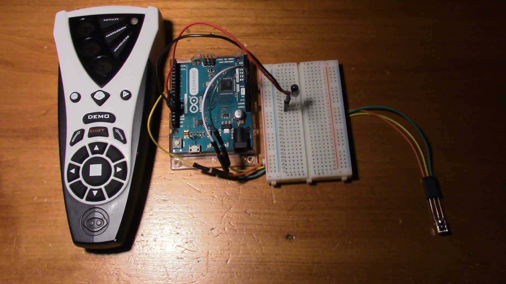

Controlling a Roboquad with Arduino

Controlling the Roboquad with and Arduino can be quite simple. The easiest method involves using the sendRaw function of the Ken Shirriff IR library . The hardware is also very simple. Simply connect an IR LED to one of the digital I/O pins of an Arduino. When using an Arduino UNO, the Ken Shirriff IR library defaults to using pin 3, but when using an Arduino Leonardo (seen right) it defaults to using pin 13. Any IR LED should work, but Adafruit supplies exceptionally good "super bright" IR LEDs. When driven in short bursts (such as for IR control) they can take up to a full amp, and when used for infrared illumination they should be driven at 10 milliamps. They are slightly more expensive than standard IR LEDs, but the improvement in performance is generally worth it. They are available on Adafruit.com individually for $0.75 or in a 25 pack for $7.95. Adafruit also retails them in a 25 pack on Amazon.
I have created a list of all of the Roboquad IR command codes here . I can't guarantee the accuracy of every code.
Below is an Arduino example that sends commands to the Roboquad based on commands sent to the Arduino through serial. It allows the Roboquad to walk in various directions and rotate its head. It accepts the commands headRight, headLeft, forward, backward, right, left, and stop. This program is easily expandable to include more commands.